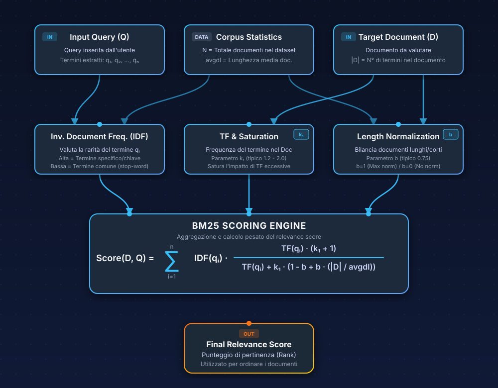
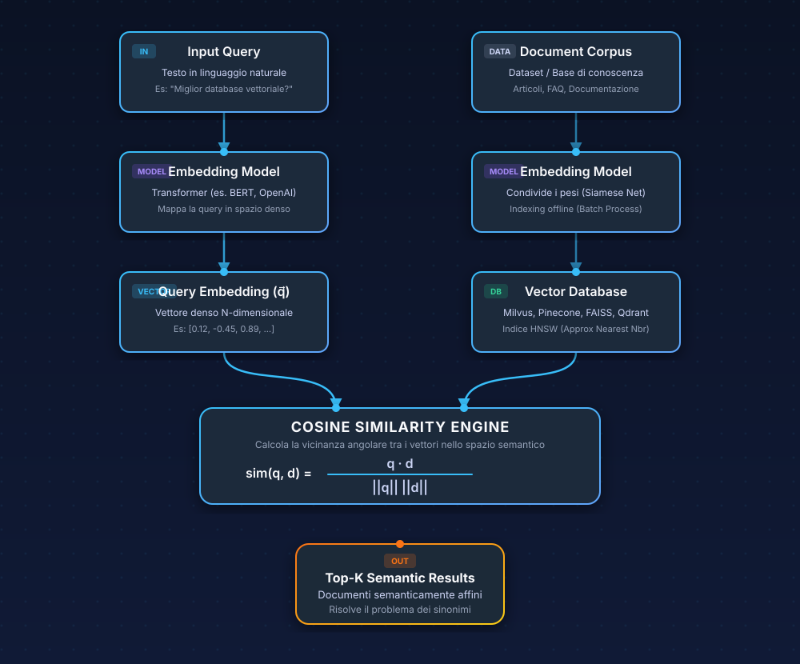

Hybrid search: is two better than one?

Introduzione
Partiamo subito da un punto a cui tengo parecchio. La semantic search non ha reso obsoleta la keyword search. Ci tengo a dirlo perché ho visto troppe persone credere il contrario, soprattutto chi si avvicina al tema del retrieval in questi ultimi anni. Liquidare la ricerca per parole chiave come "roba vecchia" semplifica troppo le cose, e quella semplificazione prima o poi si paga.
Il punto vero è un altro: ogni strategia di retrieval commette errori specifici, prevedibili e spesso complementari. La hybrid search esiste perché qualcuno ha guardato questi errori con attenzione e ha capito che dipendere da un solo segnale è una fragilità che un sistema serio non può permettersi.
Questo articolo non è una gara per eleggere un vincitore tra keyword e semantic search. Il punto è capire quali errori fanno i diversi segnali di retrieval, perché li fanno, e come si costruisce un sistema che li combina senza che uno annulli l'altro. Per rendere tutto più maneggiabile useremo un caso guida: un sistema di retrieval dietro un'app culinaria, un motore che deve recuperare ricette, ingredienti, varianti regionali e informazioni nutrizionali a partire dalle domande degli utenti. Un dominio familiare, ma con abbastanza complessità da far emergere i limiti reali di ogni approccio.
Estrarre le info con un solo metodo
Ogni volta che penso a questo problema, penso al caso in un posto di lavoro in cui c'è una persona senior con un vecchio che metodo che funziona e uno junior che ha un metodo totalmente diverso che funziona quando l'altro fallisce (e viceversa). Ecco entrambi i metodi funzionano o falliscono in base al dominio di applicazione e in base a qual è l'obiettivo finale. Ecco, la ricerca per parole e semantica sono esattamente i metodi del profilo senior e quello junior, possono eccellere sulle cose che l'altro fa fatica a fare.
Immagina di costruire il motore di ricerca per un'app di ricette. Hai un database con migliaia di ricette italiane, ognuna con titolo, lista di ingredienti, procedimento, varianti regionali e note. Un utente cerca "pasta e fagioli". Con una keyword search, per esempio usando BM25 (dopo vedremo in cosa consiste), il risultato è immediato e preciso: tutte le ricette che contengono esattamente quei termini, ordinate per rilevanza statistica. Funziona bene.
Ma un altro utente cerca "un primo sostanzioso per l'inverno con i legumi". Qui la keyword search è in difficoltà: nessuna ricetta contiene letteralmente quella frase. La pasta e fagioli è esattamente quello che serve, ma il sistema non lo sa, perché non capisce che "primo sostanzioso per l'inverno con i legumi" e "pasta e fagioli" parlano potenzialmente della stessa cosa.
Allora introduci una semantic search basata su embeddings. Il sistema ora capisce che la query è semanticamente vicina a ricette con legumi e a brodi invernali. Tra i singoli piatti che trova, la pasta e fagioli appare nei risultati. Problema risolto? Non del tutto.
Il giorno dopo un utente cerca "ricetta con 'nduja" e la semantic search gli restituisce ricette con salame piccante, peperoncino calabrese, sughi piccanti. Sono piatti semanticamente vicini al concetto di 'nduja, ma l'utente voleva specificamente la 'nduja come ingrediente, non il concetto generico di "piccante calabrese". Oppure cerca "torta caprese senza farina" e il sistema restituisce anche la torta caprese classica, perché gli embeddings catturano la vicinanza semantica tra le due ricette ma non colgono la negazione con la stessa precisione. O ancora, cerca un codice specifico per intolleranze come "E471", e la semantic search non sa che farsene di quel token.
Questi non sono bug. Sono i failure modesFailure modes indica i modi tipici e prevedibili in cui un sistema fallisce. In pratica: non errori casuali, ma pattern ricorrenti di errore che emergono perché ogni approccio ha dei limiti strutturali. strutturali di ogni singolo approccio. E la hybrid search nasce precisamente da qui: dalla constatazione che keyword e semantic search sbagliano in modi diversi, spesso complementari, e che un sistema robusto deve poter triangolare.
Come funziona la keyword search e perché è ancora fortissima
La keyword search classica si fonda su BM25, un algoritmo che discende da TF-IDF (ne abbiamo parlato in un precedente articolo) ma con due raffinamenti importanti: la saturazione della frequenza dei termini, per cui ripetere una parola venti volte non moltiplica venti volte il punteggio, e la normalizzazione per lunghezza del documento, per cui un documento lungo non viene penalizzato solo perché contiene più termini.

BM25 lavora su un indice invertito: una struttura dati che mappa ogni termine alla lista dei documenti che lo contengono, con frequenze e posizioni. È una tecnologia con decenni di ottimizzazione alle spalle, estremamente efficiente. Non richiede GPU, scala bene, e restituisce risultati in pochi millisecondi anche su un insieme di milioni di documenti. Se vuoi un approfondimento matematico te lo lascio qui 👇🏻.
Approfondimento matematico su BM25 (clicca per espandere)
Se vuoi proprio vedere dove stanno, nella formula, le intuizioni di cui stiamo parlando, BM25 per un documento $D$ e una query $Q$ si può scrivere così:
$$ \text{BM25}(D,Q) = \sum_{i=1}^{n} \text{IDF}(q_i) \cdot \frac{f(q_i,D)\cdot(k_1+1)}{f(q_i,D)+k_1\cdot\left(1-b+b\cdot\dfrac{|D|}{\text{avgdl}}\right)} $$
Quello che conta davvero, però, non è memorizzarla a memoria. È capire cosa sta facendo:
- Somma sui termini della query: BM25 non assegna un punteggio “in blocco”. Valuta ogni termine della query separatamente e poi somma i contributi. Se cerchi "pasta carbonara", il documento prende un po' di punteggio da "pasta" e un po' da "carbonara".
- IDF$(q_i)$: è la parte che dice "questo termine quanto discrimina davvero?". Se un termine compare ovunque, pesa poco. Se compare in pochi documenti, pesa molto di più. In un corpus di ricette, "ricetta" serve a poco; "guanciale" o "'nduja" spostano parecchio.
- $f(q_i,D)$ e $k_1$: qui entra in gioco quante volte il termine compare nel documento. Ma BM25 non cade nella trappola del "più volte compare, meglio è". Fa crescere il punteggio con una logica di saturazione: le prime occorrenze contano molto, poi il guadagno marginale cala. $k_1$ controlla proprio questa curva.
- $b$, $|D|$ e avgdl: questa parte serve a non favorire automaticamente i documenti lunghi. Un testo lungo ha più parole, quindi ha anche più probabilità di contenere certi termini. BM25 corregge questo effetto confrontando la lunghezza del documento $|D|$ con la lunghezza media del corpus,
avgdl.
Se vuoi vedere anche l'IDF in forma esplicita, di solito viene scritto così:
$$ \text{IDF}(q_i) = \ln\left(\frac{N - n(q_i) + 0.5}{n(q_i) + 0.5} + 1\right) $$
dove $N$ è il numero totale di documenti nel corpus e $n(q_i)$ è il numero di documenti che contengono il termine $q_i$.
Tradotto in modo molto meno elegante ma più utile: BM25 prova a tenere insieme tre cose che in retrieval si pestano continuamente i piedi. Vuole dare peso ai termini davvero informativi, vuole riconoscere che un termine presente più volte conta, ma non all'infinito, e vuole evitare che un documento vinca solo perché è più lungo degli altri. È per questo che, ancora oggi, resta un baseline così difficile da battere.
Nella nostra app culinaria, BM25 è imbattibile quando la query contiene termini esatti che compaiono nelle ricette. "Carbonara", "risotto ai funghi porcini", "tiramisù senza uova": tutte query dove il match lessicale diretto è esattamente ciò che serve. Se l'utente cerca un ingrediente specifico, magari poco comune come "colatura di alici" o "bottarga di muggine", BM25 trova precisamente i documenti che contengono quei termini. È veloce, prevedibile, e i risultati sono spiegabili: puoi sempre dire perché un documento è stato recuperato Perché è spiegabile? Perché il recupero dipende da segnali osservabili: quali termini della query compaiono nel documento, quante volte compaiono, quanto quei termini sono rari nel corpus e quanto pesa la lunghezza del documento. In altre parole, puoi risalire ai fattori che hanno prodotto il punteggio senza dover interpretare qualcosa di complesso, tipo uno spazio vettoriale denso. Ma non è ancora il momento di parlarne 😜.
I failure modes della keyword search sono però ben noti. Sicuramente il vocabulary mismatch è il più importante: se l'utente usa parole diverse da quelle nel documento, il sistema non trova nulla. "Scarola" e "indivia riccia" sono la stessa verdura, ma per BM25 sono due stringhe completamente diverse. Più in generale, BM25 non ha alcuna comprensione semantica: "un piatto veloce per la cena" non matcha con nessuna ricetta perché nessuna ricetta si descrive con quelle parole esatte.
C'è anche un problema sottile di exact match bias: BM25 può restituire documenti che contengono i termini della query in contesti irrilevanti. Se nel procedimento di una torta compare la frase "questa non è una carbonara", quella ricetta potrebbe apparire nei risultati per "carbonara". Il termine c'è, il contesto no.
Semantic search
La semantic search nasce per superare il vocabulary mismatch. L'idea è rappresentare sia le query che i documenti come vettori in uno spazio vettoriale ad alta dimensionalità, tipicamente 768 o 1536 dimensioni, dove la vicinanza geometrica corrisponde alla vicinanza di significato.

Un modello di embedding, in genere un transformer come BERT o derivati, legge un testo e lo comprime in un vettore denso di numeri decimali. Questo processo avviene sia per i documenti, al momento dell'indicizzazione, sia per la query, al momento della ricerca. Il retrieval consiste nel trovare i vettori dei documenti più vicini al vettore della query, usando metriche come la similarità coseno o il prodotto scalare.
Per farlo su milioni di documenti in tempi ragionevoli si usano algoritmi di approximate nearest neighbors (ANN), il più diffuso dei quali è HNSW (Hierarchical Navigable Small World). HNSW costruisce un grafo navigabile a più livelli dove ogni nodo è un vettore e gli archi collegano vettori vicini. La ricerca parte dai livelli alti, dove il grafo è sparse, e scende verso livelli più densi, avvicinandosi progressivamente ai vicini più prossimi. È approssimato perché non garantisce di trovare il vicino perfetto, ma in pratica la recall è molto alta e la latenza è nell'ordine dei 10-50 millisecondi.
🎮 Simulazione interattiva. Qui sotto puoi seguire la navigazione di HNSW livello per livello: la query entra dall'alto, attraversa i nodi più promettenti e il terminale spiega in tempo reale cosa sta succedendo a ogni step. Se vuoi aprirla da sola, trovi anche la pagina dedicata.
Nella nostra app culinaria, la semantic search eccelle quando la query è concettuale. "Un piatto leggero per l'estate" recupera insalate, carpacci, gazpacho, anche se nessuna di queste ricette contiene quelle parole. "Qualcosa di dolce con le mandorle" trova la torta caprese, i cantuccini, la pasta di mandorle. Il sistema capisce l'intento, non solo i termini.
I failure modes della semantic search sono altrettanto comuni e spesso sottovalutati. Il più insidioso è la deriva semantica: il sistema recupera documenti che sono nello stesso "quartiere semantico" della query ma non rispondono alla domanda. Cercando "pasta al pesto" potresti ottenere anche ricette con salsa verde, chimichurri, o altre salse a base di erbe, perché gli embeddings catturano la vicinanza concettuale tra queste preparazioni. Sono risultati plausibili ma sbagliati.
C'è poi la confusione tra entità: "ricette con mele" potrebbe restituire ricette che menzionano Apple in un contesto di cucina tech-food, perché il vettore di embedding fonde i diversi significati in una rappresentazione unica. E la cecità ai token specifici: codici, sigle, nomi propri poco frequenti, numeri, identificatori di allergeni come "E471" sono mal rappresentati nello spazio vettoriale. Un modello generalista non ha imparato a dare peso a quei token.
Un problema un filo più sottile è la cecità alla negazione. "Torta caprese senza cioccolato" e "torta caprese al cioccolato" producono embeddings molto simili perché i modelli catturano la vicinanza tematica ma faticano a codificare il "senza" come inversione di significato. Nella pratica, questo significa che la semantic search può restituire risultati che contraddicono esplicitamente la query.
Hybrid search non è un compromesso, è un'architettura!
Con questo contesto in testa, la hybrid search smette di essere una feature da checkbox e diventa una scelta progettuale. Non si tratta di prendere un po' di keyword e un po' di semantica e mescolare come in un calderone: si tratta di riconoscere che i due segnali hanno profili di errore complementari e costruire un sistema che li combina in modo controllato.
In termini tecnici, una pipeline di hybrid search esegue almeno due retriever in parallelo, uno sparse (tipicamente BM25 su indice invertito) e uno dense (ricerca vettoriale su indice HNSW), e poi fonde i risultati in una lista unica. La fusione è il passaggio critico, e ci sono due famiglie di approcci.
La score fusion normalizza i punteggi dei due retriever su una scala comune e li combina con una media pesata. La formula tipica è:
$$ s_{f} = \alpha × s_{s} + (1-α) \times s_d, $$
dove $s_{f}$$s_f$ è il punteggio finale della fusione: il valore con cui il documento viene ordinato dopo aver combinato il segnale sparse e quello dense. è il punteggio finale, $s_{s}$$s_s$ è il punteggio sparse, cioè il contributo del retriever lessicale come BM25 dopo l'eventuale normalizzazione sulla scala comune. è il punteggio sparse, $s_{d}$$s_d$ è il punteggio dense, cioè il contributo del retriever vettoriale basato su embedding, anch'esso riportato sulla stessa scala della componente sparse. è il punteggio dense, $\alpha$$\alpha$ è il peso della combinazione. Nei sistemi ibridi viene tipicamente scelto tra 0 e 1: valori più alti danno più peso al dense retrieval, valori più bassi al keyword retrieval. Non esiste una formula universale per calcolarlo: in pratica si tratta come un iperparametro e si sceglie provando più valori su un set di query annotate, tenendo quello che massimizza metriche come NDCG, MRR o Recall. è un peso che si calibra sul proprio dataset. Il vantaggio è che preserva l'informazione sulla magnitudine: un documento che domina un retriever con un punteggio altissimo viene trattato diversamente da uno che è appena sopra la soglia. Il problema è che la normalizzazione è difficile. I punteggi BM25 sono illimitati verso l'alto e dipendono dalle statistiche del corpus; la similarità coseno è compresa tra -1 e 1. Portarli sulla stessa scala con min-max richiede conoscere i valori estremi, che in un sistema distribuito non sono sempre disponibili. E il peso α va calibrato su dati etichettati: servono almeno 50-100 query annotate per ottenere un valore ragionevole.
La rank fusion, e in particolare la Reciprocal Rank Fusion (RRF), ignora completamente i punteggi e lavora solo sulle posizioni in classifica.
La formula è elegante: per ogni documento, il punteggio RRF è la somma di $\frac{1}{k + rango}$ per ogni lista in cui il documento appare, dove $k$ è una costante di smoothing (tipicamente 60). Un documento che compare al primo posto in entrambe le liste ottiene un punteggio alto; uno che compare solo in una lista, meno. La costante $k$ controlla quanto velocemente decade l'importanza della posizione. Il grande vantaggio di RRF è che non richiede calibrazione: funziona ragionevolmente bene come default zero-config, perché non deve normalizzare punteggi incomparabili. Il limite è che butta via informazione: un documento che è primo nella lista vettoriale con un distacco enorme viene trattato come uno che è primo per un soffio.
🎮 Simulazione interattiva. Qui sotto puoi vedere come cambia RRF al variare di
k: spostando il cursore cambia il peso delle prime posizioni e puoi osservare come si riordina il ranking fuso.
Figure 04: Simulazione interattiva di Reciprocal Rank Fusion. Con k basso, le posizioni di testa pesano molto di più; con k alto, la fusione diventa più piatta e premia meno aggressivamente il primo posto. Il riferimento classico k=60, ripreso dal paper originale, serve proprio a smorzare il vantaggio eccessivo del rank 1 e a favorire documenti che compaiono con continuità nelle prime posizioni di più liste.
Nella nostra app culinaria, la pipeline funziona così: l'utente cerca "pasta e ceci alla romana". BM25 recupera le ricette che contengono esattamente quei termini. La ricerca vettoriale recupera ricette semanticamente affini, come "pasta e ceci con rosmarino" o "minestra di ceci laziale", anche se non contengono "alla romana". La fusione le combina: le ricette che compaiono in entrambe le liste salgono in cima, quelle che compaiono in una sola lista restano ma con punteggio inferiore. Il risultato è più robusto di entrambi i segnali presi singolarmente.
Sparse retrieval non è solo BM25
Vale la pena fermarsi su una distinzione che si tende a trascurare: quando si parla di retrieval sparse non si intende solo BM25 classico. Esiste una famiglia di modelli chiamati learned sparse representations, il più noto dei quali è SPLADE (Sparse Lexical and Expansion Model).
SPLADE usa un transformer per produrre una rappresentazione sparse del testo, un vettore con moltissime dimensioni a zero, e poche con valori non nulli, ma a differenza di BM25 queste dimensioni sono apprese dalla rete neurale e includono anche termini che non compaiono nel testo originale. Se il documento parla di "automobile", SPLADE può attivare anche le dimensioni corrispondenti a "macchina", "veicolo", "guidare". Questo risolve il vocabulary mismatch pur mantenendo la struttura sparse compatibile con gli indici invertiti.
In pratica, SPLADE è sparse nella forma ma semantico nel contenuto. Attenzione però, non è keyword search, né è dense retrieval: è sparse retrieval con capacità semantiche. Alcuni provider, come Elasticsearch con ELSER, hanno sviluppato i propri modelli sparse proprietari seguendo questa intuizione.
Hybrid retrieval e reranking sono due cose diverse
Un'altra distinzione fondamentale da tenere a mente è che hybrid retrieval e reranking non sono la stessa cosa, anche se spesso compaiono nella stessa pipeline. L'hybrid retrieval combina i risultati di più retriever nella fase di recupero. Il reranking interviene dopo, prendendo i candidati già recuperati e riordinandoli con un modello più potente.
I reranker più efficaci sono i cross-encoder: modelli che ricevono in input la coppia query-documento concatenata e producono un singolo punteggio di rilevanza. A differenza dei bi-encoder usati nel retrieval denso, dove query e documento vengono codificati separatamente, il cross-encoder può modellare interazioni fini tra i termini della query e quelli del documento attraverso tutti i livelli del transformer. Questo lo rende molto più preciso ma anche molto più lento: deve eseguire un'inferenza completa per ogni coppia, il che lo rende praticabile solo sui primi 20-50 candidati, non su milioni di documenti.
🎮 Simulazione dedicata. Se vuoi vedere visivamente come cambia l'ordine dei risultati dopo il reranking, puoi aprire la pagina interattiva del reranker.
Ed è qui che i nodi vengono al pettine: un reranker può solo riordinare ciò che il retrieval ha già trovato. Se il retrieval non ha recuperato un documento rilevante, nessun reranking può rimediare. Per questo la recall si usa nella fase di retrieval e la precision nella fase di reranking. E per questo una pipeline ben progettata spesso ha entrambi: hybrid retrieval per massimizzare la recall, poi reranking per affinare la precision.
Tra i reranker più usati oggi ci sono il bge-reranker-v2-m3 di BAAI (open source, 278 milioni di parametri, ottime prestazioni multilingue, ma non troppo per l'italiano), Cohere Rerank 4.0 (API gestita, affidabile in produzione), e i modelli Elastic Rerank e Jina AI integrati nell'ecosistema Elasticsearch. Il costo computazionale è nell'ordine di 80-350 millisecondi su CPU per un batch di 20-50 candidati, che scende a 50-100 millisecondi su GPU.
Dalla ricerca ibrida a RAG
Vale la pena spendere due parole sul motivo per cui la hybrid search è esplosa come argomento negli ultimi anni. La risposta è nei sistemi RAG (Retrieval-Augmented Generation): pipeline che recuperano documenti da una base di conoscenza e li passano a un large language model per generare risposte. In un sistema RAG, la qualità del retrieval determina la qualità della generazione. Se il retrieval manca documenti rilevanti, il modello genera risposte inventate o incomplete. Se recupera documenti fuorvianti, il modello li integra acriticamente nella risposta.
Questo ha reso il retrieval un componente critico in un modo nuovo: non è più solo una questione di mostrare una lista di risultati a un utente umano che può valutarli, ma di fornire contesto a un sistema che lo consumerà in modo automatico. E i requisiti cambiano: per la search classica conta molto la precision, perché l'utente vede direttamente i risultati e quelli sbagliati sono immediatamente evidenti; per il RAG conta ancora di più la recall, perché il modello può filtrare il rumore ma non può inventare informazioni che non ha ricevuto. La hybrid search, combinando più segnali per massimizzare la recall senza sacrificare troppo la precision, è diventata lo standard de facto per i sistemi RAG in produzione.
Hybrid search tra i vari provider?
Ogni provider ha fatto scelte progettuali diverse su come implementare la hybrid search, e queste scelte riflettono la loro storia e la loro visione dell'architettura. Capire queste differenze è più utile di qualsiasi tabella comparativa di feature.
Elasticsearch: il più completo, il più stratificato
Elasticsearch è oggi probabilmente il sistema più maturo per la hybrid search, frutto di un'evoluzione che parte dal suo DNA di motore di ricerca full-text. Dal punto di vista architetturale, combina BM25 su indice invertito con ricerca kNN su vettori densi e, opzionalmente, con ELSER (Elastic Learned Sparse Encoder), un modello sparse proprietario che funziona come una sorta di SPLADE interno all'ecosistema Elastic.
Il cuore del sistema è il retriever framework, disponibile dalla versione 8.16: una struttura ad albero componibile dove ogni nodo è un retriever e i retriever composti possono annidare retriever foglia in profondità arbitraria. In una singola chiamata API puoi: recuperare con BM25, recuperare con kNN, fondere con RRF, poi ri-ordinare con un cross-encoder. Tutto server-side, senza la logica client.
Le opzioni di fusione sono due: RRF, robusto e senza "calibrazione", e un retriever lineare più recente che combina i punteggi normalizzati con pesi per retriever. Il retriever lineare è più preciso quando i pesi sono calibrati correttamente, ma richiede dati etichettati.
Sul fronte del reranking, Elasticsearch ha investito pesantemente. Ha un modello di reranking interno (Elastic Rerank, basato su DeBERTa v3, 184 milioni di parametri che secondo i benchmark interni competono con modelli da 2 miliardi), integrazioni con Cohere e Jina AI, e supporto per modelli custom caricati via Eland.
Il controllo è granulare: pesi per retriever, parametri di fusione, filtering sia pre che post ricerca vettoriale (con un'insidia documentata: il filtering in contesto bool/filter agisce come post-filter sul kNN, non pre-filter, il che può restituire zero risultati inaspettatamente). Lo svantaggio è la complessità: Elasticsearch espone molte manopole, e usarle male è facile.
Il pricing su Elastic Cloud è consumption-based, misurato in VCU (Virtual Compute Units); i nodi ML per ELSER richiedono almeno 4 GB di RAM, per il reranking almeno 8 GB. Il self-hosting è possibile sotto licenza AGPL, con costi infrastrutturali che dipendono dalla scala.
OpenSearch: l'alternativa open source con un approccio diverso alla fusione
OpenSearch implementa la hybrid search attraverso il Neural Search plugin, incluso di default dalla versione 2.4, e un tipo di query dedicato (hybrid) introdotto nella 2.11. L'architettura è diversa da Elasticsearch: la fusione non avviene attraverso un retriever componibile ma attraverso una search pipeline che intercetta i risultati tra la fase di query e la fase di fetch Che differenza c'è? La fase di query è il momento in cui OpenSearch esegue i retriever e produce una prima lista di risultati con i relativi score. La fase di fetch arriva subito dopo: il motore recupera il contenuto completo dei documenti selezionati e prepara la risposta finale. Dire che la pipeline si inserisce "tra query e fetch" significa che può normalizzare, fondere o riordinare i risultati prima che vengano materializzati nella risposta..
Il punto di forza di OpenSearch è la varietà di opzioni di normalizzazione e combinazione dei punteggi. Offre tre tecniche di normalizzazione semplici (min-max, L2, z-score) e tre metodi di combinazione altrettanto semplici (media aritmetica, geometrica, armonica), più RRF dalla versione 2.19. In totale, più combinazioni possibili rispetto a Elasticsearch per il tuning fine della fusione basata su punteggi.
Il compromesso è che la configurazione richiede più boilerplate: bisogna creare una pipeline di ingestione per la generazione degli embedding, una search pipeline per la fusione, e registrare i modelli ML. I pesi sono definiti nella pipeline, non nella query, il che significa che configurazioni diverse di pesi richiedono pipeline diverse.
Sul reranking, OpenSearch supporta cross-encoder deployati via ML Commons e connettori verso Amazon Bedrock e Cohere. La versione 3.0 ha introdotto il supporto nativo per i filtri comuni nelle query ibride, eliminando la necessità di duplicare manualmente i filtri in ogni sotto-query.
Il pricing su AWS OpenSearch Service parte da circa 350 dollari al mese ($11.52 al giorno) per la configurazione su S3. Il self-hosting è gratuito sotto licenza Apache 2.0.
Pinecone: sparse e dense nello stesso spazio vettoriale
Pinecone ha un approccio radicalmente diverso: non ha un motore BM25 tradizionale. Tratta tutto come vettori. La hybrid search si realizza in due modi: un indice ibrido singolo dove ogni record contiene sia un vettore denso che uno sparse (generato da un BM25 encoder o da SPLADE), oppure due indici separati, uno denso e uno sparse, i cui risultati vengono combinati lato client.
Nell'indice ibrido singolo, Pinecone tratta la coppia sparse-dense come un unico vettore e calcola il prodotto scalare sull'intero spazio dimensionale. Non esiste un parametro alpha lato server: il bilanciamento tra i segnali si ottiene scalando i valori dei vettori prima della query, lato client. Funziona, ma è meno elegante delle soluzioni server-side.
Un dettaglio importante sull'infrastruttura serverless: su indici serverless, Pinecone recupera prima per vettori densi e poi ri-classifica con i vettori sparse, il che significa che il segnale sparse ha un'influenza ridotta rispetto a quanto suggerisce il parametro alpha nominale.
Per l'approccio a due indici separati, che Pinecone chiama "cascading retrieval", la combinazione avviene tramite reranker piuttosto che fusione di punteggi. Il reranking supera, o meglio questo è quello che hanno dichiarato loro, le euristiche come RRF, e offre reranker gestiti integrati: pinecone-rerank-v0, Cohere Rerank 3.5, e bge-reranker-v2-m3, tutti ospitati sui server Pinecone.
Il pricing è a consumo: Read Units basate sulla dimensione del namespace per query (16 dollari per milione di RU nel piano Standard), Write Units per l'ingestione, e storage a circa 0.33 dollari per GB al mese. Il costo scala con il volume delle query, il che può diventare significativo ad alto traffico.
Qdrant: multi-vettore con pipeline componibili server-side
Qdrant parte da un'architettura multi-vettore per punto: ogni record può avere più vettori con nomi, dimensionalità e metriche diverse. Un punto può contenere un vettore denso per la semantic search, uno sparse per il BM25, e anche vettori ColBERT per il late interaction reranking.
La hybrid search si realizza attraverso il meccanismo di prefetch nella Query API: ogni prefetch è una sotto-query indipendente che recupera candidati da un vettore specifico, e i risultati vengono fusi server-side con RRF o DBSF (Distribution-Based Score Fusion) Che cos'è DBSF? È un metodo di score fusion: invece di guardare solo alla posizione in classifica, come fa RRF, prova prima a rendere confrontabili i punteggi dei retriever usando la loro distribuzione statistica e poi li combina. In pratica conserva più informazione dei punteggi originali, ma richiede che quei punteggi siano abbastanza stabili e sensati da poter essere normalizzati.. I prefetch possono essere annidati per costruire pipeline multi-stadio arbitrarie, tutto in una singola chiamata API.
Un punto che secondo me merita la nostra attenzione è che dalla versione 1.7 la ricerca sparse è esatta, non approssimata, grazie a un indice invertito dedicato. Zero perdita di recall per il matching lessicale. Dalla 1.15.2, la conversione BM25 avviene nativamente server-side con il modifier IDF. Dalla 1.16, i pesi per prefetch sono configurabili nel RRF e la costante k è personalizzabile.
L'assenza di reranker cross-encoder ospitati è un limite: il reranking avviene tramite vettori ColBERT nel prefetch (un late interaction model meno preciso di un cross-encoder puro ma molto più veloce) oppure tramite servizi esterni. Scritto in Rust con accelerazione SIMD Che vuol dire SIMD? Sta per Single Instruction, Multiple Data: il processore applica la stessa operazione a più valori in parallelo, per esempio confrontando più numeri del vettore nello stesso colpo. In motori come Qdrant questo aiuta molto a velocizzare calcoli numerici ripetitivi come distanze e similarità., Qdrant è tra i più performanti in benchmark di latenza pura.
Il pricing su Qdrant Cloud è basato sull'infrastruttura (vCPU, RAM, disco), senza costi per query: una volta provisionato il cluster, le query sono illimitate. Il self-hosting è gratuito sotto licenza Apache 2.0.
Weaviate: il vector database nato ibrido
Weaviate è nato come vector database e ha aggiunto BM25 come complemento. La hybrid search combina BM25F (una variante di BM25 con boosting per campo) e ricerca vettoriale densa in una singola operazione. Il parametro alpha controlla il bilanciamento: alpha=1 è pura ricerca vettoriale, alpha=0 è puro BM25, alpha=0.5 è il default bilanciato.
Inizialmente Weaviate usava una somma semplice. Dalla versione 1.20 ha introdotto due opzioni: rankedFusion (basata sui ranghi, simile a RRF) e relativeScoreFusion (normalizza i punteggi effettivi e li combina con media pesata). Dalla 1.24, relativeScoreFusion è diventata il default perché preserva più informazione rispetto alla fusione basata sui ranghi Che vuol dire? Una fusione basata sui ranghi vede solo la posizione dei documenti: primo, secondo, terzo. Così tratta allo stesso modo un primo posto ottenuto con un margine enorme e un primo posto ottenuto per un soffio. Una score fusion invece conserva anche quanto un risultato fosse avanti o indietro nei punteggi originali. In questo senso perde meno segnale rispetto a un metodo che riduce tutto al solo ordine in classifica..
Weaviate non supporta nativamente vettori sparse come SPLADE: il componente keyword è esclusivamente BM25 classico su indice invertito. Questo è un limite se si vuole usare retrieval sparse appreso, ma per alcuni casi d'uso il BM25 nativo è sufficiente.
Sul reranking, Weaviate integra moduli per Cohere Rerank, Jina AI, Voyage AI e transformer self-hosted. Il multi-tenancy nativo (oltre 50.000 tenant per nodo) è un differenziatore forte per le applicazioni SaaS. Il pricing su Weaviate Cloud parte da 45 dollari al mese nel piano Flex, calcolato sulle dimensioni vettoriali archiviate. Il self-hosting è gratuito sotto licenza BSD-3.
Azure AI Search: la pipeline più completa out-of-the-box
Azure AI Search è l'unico provider in questa lista che nasce come servizio di ricerca enterprise tradizionale e ha aggiunto le capacità vettoriali successivamente. Questo background si riflette in una pipeline multi-stadio che è probabilmente la più completa disponibile senza scrivere codice di orchestrazione.
La pipeline standard prevede tre stadi:
- BM25 e ricerca vettoriale in parallelo.
- Fusione con RRF (l'unico metodo di fusione disponibile, non c'è score fusion).
- Semantic ranker, un reranker basato su modelli derivati da Microsoft Bing che ri-classifica i primi 50 risultati usando deep learning multilingue. Il semantic ranker non è un semplice reranker, estrae anche caption e può restituire risposte dirette estratte dai documenti.
- In anteprima c'è anche un quarto stadio, l'agentic retrieval, che decompone query complesse in sotto-query, le esegue in parallelo e fonde i risultati.
Il controllo sul bilanciamento BM25/vettori è indiretto: non c'è un parametro alpha, ma si può assegnare un peso a ogni vector query e controllare quanti risultati BM25 alimentano la fusione tramite il parametro maxTextRecallSize.
Il pricing è a Search Unit (replica × partizione), partendo da circa 75 dollari al mese per il tier Basic. Il semantic ranker ha un costo aggiuntivo per query dopo la quota gratuita. Le query standard (full-text e vettoriali) sono incluse nel costo dell'unità. L'integrazione stretta con Azure OpenAI e l'ecosistema Azure in generale rende Azure AI Search la scelta naturale per organizzazioni già in quell'ecosistema, ma introduce un vendor lock-in significativo.
Le macrofamiglie
Al di là dei singoli provider, è utile raggruppare gli approcci in tre famiglie.
La prima è keyword + vettori densi: BM25 tradizionale su indice invertito combinato con ricerca ANN su embeddings. È l'approccio di Weaviate, Azure AI Search, e la configurazione più comune di Elasticsearch e OpenSearch. Il vantaggio è la semplicità concettuale e l'infrastruttura collaudata; il limite è che il componente keyword non ha capacità semantiche.
La seconda è dense + sparse retrieval: vettori densi combinati con vettori sparse appresi (SPLADE o simili). È l'approccio di Pinecone (sparse-dense index), Qdrant (multi-vettore con sparse nativo), ed Elasticsearch con ELSER. Il vantaggio è che il retrieval sparse appreso risolve il vocabulary mismatch senza abbandonare l'efficienza dell'indice invertito; il limite è la complessità aggiuntiva di generare e gestire due tipi di embedding.
La terza è multi-stage retrieval con fusione e reranking: pipeline a più stadi dove la fusione è seguita da un reranking con un modello più potente. Azure AI Search con il semantic ranker, Elasticsearch con il retriever framework completo, e Qdrant con i prefetch annidati rientrano qui. È la configurazione che in pratica dà i migliori risultati, ma è anche la più complessa da configurare, valutare e mantenere.
I provider secondari in breve
Redis (con Redis Stack) ha introdotto nella versione 8.4 il comando FT.HYBRID, che fonde BM25 e ricerca vettoriale in un singolo comando con supporto per RRF e combinazione lineare. La forza è la velocità sub-millisecondo in memoria; il limite è che tutto deve stare in RAM e le opzioni di ranking sono meno sofisticate.
diff --git a//Users/mirkocalcaterra/Documents/GitHub/MyBlog/files/AI Engineering/Hybrid search.md b//Users/mirkocalcaterra/Documents/GitHub/MyBlog/files/AI Engineering/Hybrid search.md --- a//Users/mirkocalcaterra/Documents/GitHub/MyBlog/files/AI Engineering/Hybrid search.md +++ b//Users/mirkocalcaterra/Documents/GitHub/MyBlog/files/AI Engineering/Hybrid search.md @@ -239,3 +239,3 @@
Vespa è probabilmente il sistema più potente e flessibile per la hybrid search, usato in produzione da Perplexity AI per il suo intero layer di retrieval. Il suo sistema di phased ranking (first-phase, second-phase, global-phase) con espressioni di ranking arbitrarie in algebra tensoriale non ha equivalenti. Può eseguire modelli ONNX, ColBERT MaxSim, cross-encoder, tutto dentro il serving layer. Supporta nativamente BM25, HNSW, SPLADE, e qualsiasi modello custom. La complessità operativa è però elevata: richiede di imparare YQL Che cos'è YQL? È la Yahoo Query Language usata da Vespa per esprimere query, filtri, operatori di matching e logica di retrieval. In pratica è il linguaggio con cui descrivi al motore cosa cercare e come farlo., i rank-profile Che cos'è un rank-profile? In Vespa è la configurazione che definisce come i documenti vengono valutati e ordinati: quali feature usare, quali formule applicare e in quali fasi del ranking eseguirle., la configurazione dei cluster Che cosa significa qui? Vuol dire decidere come distribuire il sistema su più nodi: separazione tra serving e content nodes, replica, sharding, risorse hardware e topologia del deployment. È la parte infrastrutturale che incide su latenza, capacità e affidabilità., e concetti specifici come weakAnd Che cos'è weakAnd? È un operatore di matching di Vespa pensato per il retrieval efficiente su query con molti termini: non richiede che tutti i termini matchino rigidamente, ma seleziona velocemente i documenti più promettenti sulla base dei termini più informativi. e match-features Che cosa sono le match-features? Sono i segnali calcolati da Vespa durante matching e ranking per ciascun documento, per esempio BM25, prossimità, score tensoriali o output di modelli. Servono sia per ordinare i risultati sia per ispezionare e fare debugging del ranking..
Milvus/Zilliz supporta campi multi-vettore (densi e sparse) nella stessa collezione, con fusione via WeightedRanker o RRFRanker. Ha recentemente aggiunto una funzione BM25 built-in che genera vettori sparse dal testo senza preprocessing esterno. È un vector database puro con architettura distribuita che separa compute e storage, performante in ANN ma con opzioni di ranking meno sofisticate di Vespa o Elasticsearch.
Typesense offre hybrid search come combinazione automatica di keyword e vector search quando la query include sia campi testuali che campi di auto-embedding. La fusione è rank-based con un parametro alpha (default 0.3 per il vettoriale, 0.7 per il keyword). La forza è la semplicità estrema: un singolo binario senza dipendenze, deployment in minuti, tolerance ai typo automatica. Il limite è la minore flessibilità nella fusione e l'assenza di reranking nativo.
Come si costruisce una pipeline ibrida concreta
Torniamo alla nostra app culinaria e costruiamo una pipeline ibrida concreta, passo dopo passo.
Il primo passo è il chunking. Le ricette sono documenti strutturati: titolo, lista di ingredienti, procedimento, note e varianti. Un chunking intelligente non taglia a dimensione fissa ma rispetta la struttura: il titolo e gli ingredienti formano un chunk, il procedimento un altro, le note un altro ancora. Ogni chunk porta con sé metadata (titolo della ricetta, regione, categoria, tempo di preparazione) che saranno utili per il filtering. La dimensione ideale è tra 300 e 500 parole per chunk, con un overlap del 10-20% per non perdere contesto ai confini.
Il secondo passo è l'indicizzazione duale. Per ogni chunk si generano due rappresentazioni: l'indice invertito per BM25, che il database costruisce automaticamente dai termini del testo, e il vettore denso, generato passando il testo attraverso un modello di embedding. Se il provider lo supporta, si aggiunge un terzo segnale: un vettore sparse (ELSER in Elasticsearch, sparse via SPLADE o BM25 encoder in Pinecone/Qdrant). I metadata vengono indicizzati come campi filtrabili.
Il terzo passo è la query pipeline. Quando l'utente cerca "pasta e ceci alla romana", la pipeline esegue in parallelo una query BM25 sul testo e una ricerca kNN sul vettore della query. I risultati vengono fusi, tipicamente con RRF come default iniziale. Poi, opzionalmente, i primi 20-50 candidati vengono passati a un reranker cross-encoder che li riordina con maggiore precisione. Infine, i top 5-10 risultati vengono restituiti all'utente o passati al modello LLM nel caso di un sistema RAG.
Il quarto passo, spesso trascurato, è il filtering. Nella nostra app, l'utente potrebbe aver impostato filtri per "senza glutine", "tempo di preparazione sotto i 30 minuti", "cucina campana". Questi filtri devono essere applicati prima della ricerca vettoriale (pre-filtering), non dopo, altrimenti si rischia di recuperare candidati che verranno poi scartati, degradando la recall effettiva. La maggior parte dei provider moderni supporta il pre-filtering sia per BM25 che per kNN, ma le implementazioni variano e non è facilissimo gestire tutto.
In pseudo-codice, una pipeline completa su Qdrant potrebbe essere qualcosa del genere: una singola chiamata alla Query API con due prefetch (uno sparse con BM25 nativo e uno denso), un filtro sulla regione e la categoria, fusione RRF con pesi 2.0 per il denso e 1.0 per lo sparse, e un limit di 10 risultati.
Su Elasticsearch, la stessa logica si esprime con un retriever tree: un text_similarity_reranker che avvolge un RRF che avvolge uno standard retriever (BM25) e un knn retriever, con un filtro comune e il reranking sul campo testuale.
Misurare la qualità del retrieval
Dire "funziona meglio" senza metriche è un'opinione. E le opinioni non scalano, lo sappiamo bene. Per valutare una pipeline di hybrid search servono metriche precise, e serve capire cosa misurano.
Precision@k misura quanti dei primi $k$ risultati sono rilevanti. Se su 10 risultati 7 sono pertinenti, la precision@10 è 0.7. È una metrica semplice ma non tiene conto della posizione: un risultato rilevante al decimo posto vale come uno al primo. Per la search classica, dove l'utente vede la lista, la precision è molto importante perché i risultati sbagliati sono immediatamente visibili e degradano la fiducia.
Recall@k misura quanti dei documenti rilevanti totali compaiono nei primi k risultati. Se ci sono 20 ricette pertinenti nel database e ne recuperiamo 15 nei primi 50, la recall@50 è 0.75. Per i sistemi RAG la recall è spesso la metrica più critica: il modello può filtrare il rumore, ma non può inventare informazioni che non gli sono state fornite.
MRR (Mean Reciprocal Rank) misura quanto velocemente appare il primo risultato rilevante, mediato su tutte le query. Se il primo risultato corretto è al secondo posto, il reciprocal rank è 0.5; se è al primo posto, è 1.0. MRR è la metrica giusta quando l'utente agisce sul primo risultato buono, come in un chatbot o un sistema di question answering.
NDCG (Normalized Discounted Cumulative Gain) è la metrica più sofisticata: tiene conto sia della rilevanza graduata Che cosa vuol dire? Vuol dire che la rilevanza non è trattata come un sì/no secco, ma come un livello: per esempio un risultato può valere 3 se è molto rilevante, 1 se è solo parzialmente utile, 0 se è irrilevante. Questo permette alla metrica di premiare di più i risultati davvero ottimi rispetto a quelli solo vagamente pertinenti. (un risultato può essere "molto rilevante", "parzialmente rilevante", "non rilevante") sia della posizione (i risultati rilevanti in cima alla lista valgono logaritmicamente di più di quelli in fondo). NDCG@10 è il benchmark standard per i sistemi di retrieval, usato nella leaderboard MTEB e nel benchmark BEIR. Un sistema di hybrid search dovrebbe sempre essere valutato con NDCG@10 oltre che con recall@k.
La differenza tra valutazione per search classica e per RAG è molto importante. Le metriche classiche (MRR, NDCG, MAP) assumono che l'attenzione dell'utente decada monotonicamente con la posizione. Ma i modelli LLM non leggono i risultati sequenzialmente: mostrano un effetto "lost in the middle", dove l'accuratezza è alta per i primi e gli ultimi documenti del contesto ma degrada per quelli centrali. Questo significa che le metriche classiche non catturano completamente l'impatto del retrieval sulla qualità della generazione. Per il RAG, è utile affiancare alle metriche di retrieval anche metriche end-to-end come la faithfulness e la answer relevancy, misurabili con framework come RAGAS Che cos'è RAGAS? È un framework di valutazione pensato specificamente per pipeline RAG. Serve a misurare aspetti come faithfulness, answer relevancy, context precision e context recall, spesso usando un LLM come giudice. o DeepEval Che cos'è DeepEval? È una libreria di evaluation per applicazioni LLM, inclusi chatbot, agent e sistemi RAG. Permette di definire test automatici e metriche per controllare qualità delle risposte, grounding, correttezza e comportamento del sistema..
La costruzione di un dataset di valutazione è un investimento che ripaga. Si parte da 50-100 query rappresentative degli utenti che poi andranno a usare il sistema RAG, si annotano i giudizi di rilevanza per i documenti recuperati (binari o graduati), e si calcola il valore delle metriche come baseline. Ogni modifica alla pipeline, che sia un cambio di modello di embedding, un aggiustamento dei pesi di fusione o l'aggiunta di un reranker, viene valutata contro questa baseline. Senza questo processo, si naviga alla cieca.
I costi, nell'ordine che conta
Il costo computazionale viene prima di tutto
Il costo più importante della hybrid search non è il prezzo del provider: è il costo computazionale di eseguire due retriever invece di uno, mantenere due indici, e opzionalmente aggiungere un reranker.
L'indicizzazione è la "voce più pesante" in fase di setup. Costruire un indice invertito per BM25 è relativamente economico, anche su CPU. Costruire un indice HNSW per i vettori densi è significativamente più costoso: richiede la generazione degli embeddings (che necessita GPU o API a pagamento) e la costruzione del grafo HNSW, che è CPU-intensiva. Per dare un ordine di grandezza, indicizzare 24 milioni di abstract PubMed con solo BM25 su Elasticsearch richiede circa 156 minuti su 16 core; aggiungere gli embeddings può raddoppiare o triplicare il tempo.
Lo storage è una voce continua. Un indice invertito resta relativamente compatto, mentre per i vettori almeno il costo di base si calcola in modo meccanico: la documentazione Azure usa la formula documenti × dimensioni × byte per valore, quindi un vettore a 768 dimensioni in float32 occupa 768 × 4 = 3.072 byte, cioè circa 3 KB per documento. Su 10 milioni di documenti sono già circa 30,7 GB di raw vector payload. Per HNSW c'è poi l'overhead dell'indice: Microsoft riporta, per vettori float32 non compressi a 768 dimensioni con m=4, un overhead di circa 2% in memoria, quindi in quel caso si sale a circa 31,3 GB prima di considerare documenti cancellati o copie aggiuntive; inoltre Azure nota che su disco l'occupazione dei vector index può arrivare a essere circa 3x quella in memoria, perché il sistema mantiene copie diverse per scopi diversi. La quantizzazione (scalare o binaria) e i tipi numerici più stretti riducono molto questo costo, mentre tenere insieme indice invertito e indice vettoriale significa quasi sempre pagare un doppio costo infrastrutturale.
La latenza di query è la voce percepita dall'utente, ma qui conviene essere prudenti: i numeri cambiano moltissimo con corpus, filtri, hardware, efSearch, numCandidates e cache. Come ordine di grandezza, Elastic descrive il retrieval real-time su larga scala come un problema che deve rimanere sotto i 100 ms per singola search request, e in un benchmark pubblico su 20 milioni di documenti riporta per una configurazione di vector search filtrata una average latency di 25 ms lato Elasticsearch. Sul reranking, almeno abbiamo un riferimento più concreto: la documentazione di Sentence Transformers riporta per cross-encoder/ms-marco-MiniLM-L6-v2 circa 1800 document pairs al secondo su una V100 GPU, che equivale grossolanamente a 11 ms per 20 candidati e 28 ms per 50 candidati, al netto dell'overhead applicativo. In pratica, una pipeline ibrida ben ottimizzata può restare in una fascia interattiva, ma il reranking resta spesso il primo punto in cui la latenza smette di scalare bene ad alto throughput.
Il costo commerciale dipende dal modello
I modelli di pricing dei provider sono così diversi che un confronto diretto è fuorviante senza specificare il caso d'uso.
I provider infrastructure-based (Qdrant Cloud, Weaviate Cloud, Elasticsearch self-hosted, OpenSearch self-hosted) addebitano per risorse allocate: CPU, RAM, disco. Le query sono illimitate una volta provisionato il cluster. Questo modello favorisce i workload ad alto volume di query.
I provider consumption-based (Pinecone Serverless, Elastic Cloud Serverless, AWS OpenSearch Serverless) addebitano per operazione o per unità di compute consumata. Questo modello favorisce i workload con volumi variabili o bassi, ma può diventare costoso con l'aumentare del traffico.
I costi aggiuntivi spesso trascurati includono: la generazione degli embeddings (i modelli API come quelli di OpenAI costano circa 0.02-0.13 dollari per milione di token), il reranking (Cohere Rerank costa 1 dollaro per mille ricerche), e il semantic ranker di Azure AI Search che ha un costo per query dopo la quota gratuita.
Come punto di riferimento indicativo: una configurazione minima su Qdrant Cloud parte dal tier gratuito (1 GB RAM); Weaviate Cloud parte da 45 dollari al mese; Azure AI Search Basic da circa 75 dollari al mese; AWS OpenSearch Serverless da circa 350 dollari al mese; Pinecone Standard da 50 dollari al mese con costi a consumo.
Il costo dell'errore è quello che nessuno budgeta
Il costo più sottile è quello dell'errore di retrieval. In un sistema RAG, un retrieval che manca documenti rilevanti produce risposte incomplete o allucinazioni. Un retrieval che recupera documenti fuorvianti produce risposte plausibili ma sbagliate, che sono peggio dell'assenza di risposta. Nella nostra app culinaria, restituire una ricetta con allergeni non dichiarati perché il retrieval non ha colto un filtro è un rischio da non sottovalutare, assolutamente.
Scegliere una soluzione troppo semplice, un solo retriever senza reranking, un solo segnale senza fusione, può sembrare un risparmio di complessità, ma il costo si materializza nella qualità dei risultati.
Dall'altra parte, la sovra-ingegnerizzazione è un rischio possibile. Aggiungere complessità senza valutazione produce sistemi opachi dove i problemi sono difficili da diagnosticare. La regola pratica è: parti con BM25 + dense + RRF come baseline, misura, e aggiungi complessità (reranking, pesi calibrati, sparse appreso) solo quando le metriche lo giustificano.
Conclusione
La hybrid search è proprio un principio di progettazione: non fidarti di un solo segnale, ma valutane due che funzionano in modo diverso. Ogni metodo di retrieval ha failure modes prevedibili, e la combinazione intelligente di segnali diversi produce un sistema più robusto di qualsiasi singolo componente.
Se c'è una cosa da portare a casa, è questa: la keyword search non è morta, la semantic search non è magica, e la hybrid search non è la somma delle due. È un'architettura che riconosce l'imperfezione di ogni segnale e la trasforma in resilienza. Il come si realizza, con quale provider, con quale fusione, con quali pesi, dipende dal dominio, dal volume, dal budget e dalla tolleranza all'errore. Ma il perché è universale: i sistemi che dipendono da un solo segnale di retrieval sono fragili, e la fragilità prima o poi si paga.